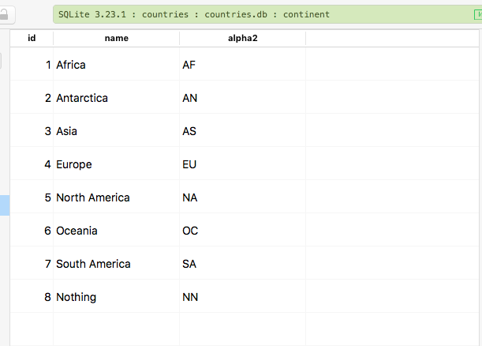

Generic Pre-populated Models in Fluent
Here’s another example of a Model that is DBgeneric, but also comes with prepopulated data.
Let’s use the example of Continent ↤⇉ Country.
That is a one - to many relationship, where for one Continent there are multiple Countries. And not vice-versa.
Define Generic Model
import Async
import Fluent
import Foundation
public final class Continent<D>: Model where D: QuerySupporting, D: IndexSupporting {
public typealias Database = D
public typealias ID = Int
public static var idKey: IDKey { return \.id }
public static var entity: String {
return "continent"
}
public static var database: DatabaseIdentifier<D> {
return .init("continent")
}
var id: Int?
var name: String
var alpha2: String
init(name: String, alpha2: String) {
self.name = name
self.alpha2 = alpha2
}
}
extension Continent: Migration where D: QuerySupporting, D: IndexSupporting { }
Define Static Data
let continents : [[String: String]] = [
["name": "Africa", "alpha2": "AF"],
["name": "Antarctica", "alpha2": "AN"],
["name": "Asia", "alpha2": "AS"],
["name": "Europe", "alpha2": "EU"],
["name": "North America", "alpha2": "NA"],
["name": "Oceania", "alpha2": "OC"],
["name": "South America", "alpha2": "SA"],
["name": "Nothing", "alpha2": "NN"]
]
A note : generic classes cannot hold data, so define your insertable data outside.
Define the DDL Methods for Field Definitions, Indexes and Relations
internal struct ContinentMigration<D>: Migration where D: QuerySupporting & SchemaSupporting & IndexSupporting {
typealias Database = D
static func prepareFields(on connection: Database.Connection) -> Future<Void> {
return Database.create(Continent<Database>.self, on: connection) { builder in
//add fields
try builder.field(for: \Continent<Database>.id)
try builder.field(for: \Continent<Database>.name)
try builder.field(for: \Continent<Database>.alpha2)
//indexes
try builder.addIndex(to: \.name, isUnique: true)
}
}
static func prepareInsertData(on connection: Database.Connection) -> Future<Void> {
let futures : [EventLoopFuture<Void>] = continents.map { continent in
let name = continent["name"]!
let alpha2 = continent["alpha2"]!
return Continent<D>(name: name, alpha2: alpha2).create(on: connection).map(to: Void.self) { _ in return }
}
return Future<Void>.andAll(futures, eventLoop: connection.eventLoop)
}
...
}
Here’s an Example for a Foreign Key Relationships
internal struct CountryMigration<D>: Migration where D: QuerySupporting & SchemaSupporting & IndexSupporting & ReferenceSupporting {
typealias Database = D
//MARK: - Create Fields, Indexes and relations
static func prepareFields(on connection: Database.Connection) -> Future<Void> {
return Database.create(Country<Database>.self, on: connection) { builder in
//add fields
try builder.field(for: \Country<Database>.id)
try builder.field(for: \Country<Database>.name)
try builder.field(for: \Country<Database>.numeric)
try builder.field(for: \Country<Database>.alpha2)
try builder.field(for: \Country<Database>.alpha3)
try builder.field(for: \Country<Database>.calling)
try builder.field(for: \Country<Database>.currency)
try builder.field(for: \Country<Database>.continentID)
//indexes
try builder.addIndex(to: \.name, isUnique: true)
try builder.addIndex(to: \.alpha2, isUnique: true)
try builder.addIndex(to: \.alpha3, isUnique: true)
//referential integrity - foreign key to parent
try builder.addReference(from: \Country<D>.continentID, to: \Continent<D>.id, actions: .init(update: .update, delete: .nullify))
}
}
...
}
Needs to conform to ReferenceSupporting as well.
Implement The required Methods: prepare and revert
static func prepare(on connection: Database.Connection) -> Future<Void> {
let futureCreateFields = prepareFields(on: connection)
let futureInsertData = prepareInsertData(on: connection)
let allFutures : [EventLoopFuture<Void>] = [futureCreateFields, futureInsertData]
return Future<Void>.andAll(allFutures, eventLoop: connection.eventLoop)
}
static func revert(on connection: Database.Connection) -> Future<Void> {
do {
// Delete all names
let futures = try continents.map { continent -> EventLoopFuture<Void> in
let alpha2 = continent["alpha2"]!
return try Continent<D>.query(on: connection).filter(\Continent.alpha2, .equals, .data(alpha2)).delete()
}
return Future<Void>.andAll(futures, eventLoop: connection.eventLoop)
}
catch {
return connection.eventLoop.newFailedFuture(error: error)
}
}
Add Migrations
In configure.swift add the code:
migrations.add(migration: ContinentMigration<SQLiteDatabase>.self, database: .sqlite)
And the migration worked:

Prev: Generic Migrations in Fluent
Next: Revert Last Migration
#tutorial #fluent #vapor #model #migration #db #generic #one-to-many #many-to-one